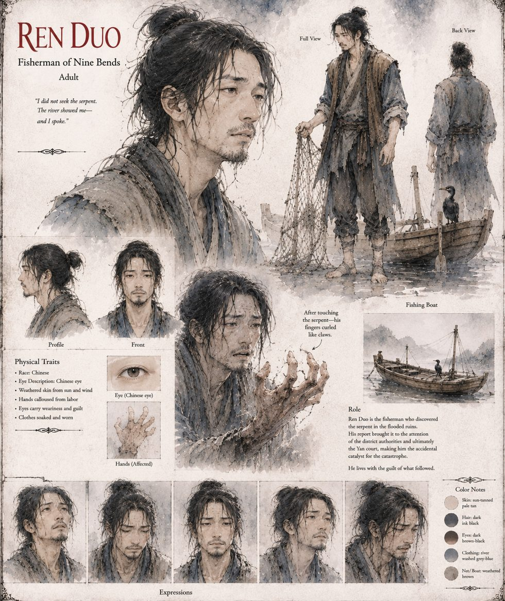

Ren Duo
Fisherman of Nine Bends · eleven years on the flooded ruins
A fisherman with a widowed mother, a debt to his boat's previous owner, and a private rule of arithmetic about when frightening water is worth fishing. For ten of his eleven years on the flooded ruins the place gives him nothing stranger than good carp and the occasional drowned roof-tile. Then his net brushes something black beneath a fallen lintel, the water lights from the inside, and he is thrown into the shallows with his fingers curled like claws. He avoids the basin for eleven days, goes back on the ninth night with a coil of rope and a half-formed plan to lead the creature out himself, and does not try it. Elder Peng, watching, lets him leave.
What finally moves him is the same arithmetic that governs everything else in his life, and a smaller, less flattering wish to be believed. He stands outside the district magistrate's residence for the better part of an hour before he knocks. He had imagined a clerk writing the report down and filing it somewhere it would quietly wait to be useful; instead six armed men and a specially commissioned wagon arrive within the fortnight, and six men drown securing the transport. No history records their names. Ren Duo remembers all six for the rest of his life, though he never learns which name belongs to which face, and the not-knowing becomes its own shape of guilt. His own account of a numb hand is filed with the commission that studies the creature, and very likely burned with the rest.
“I did not seek the serpent. The river showed me—and I spoke.”